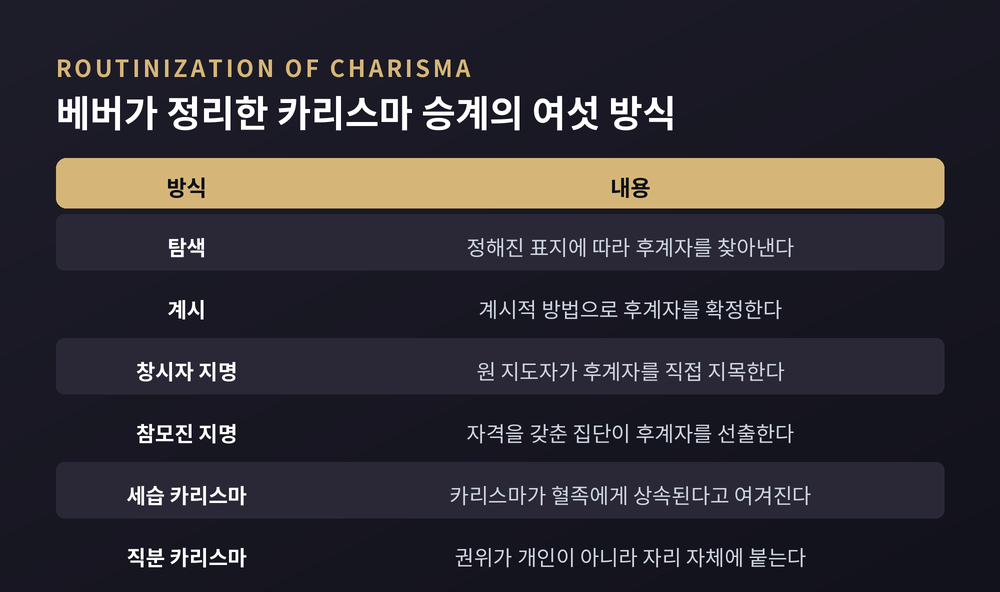
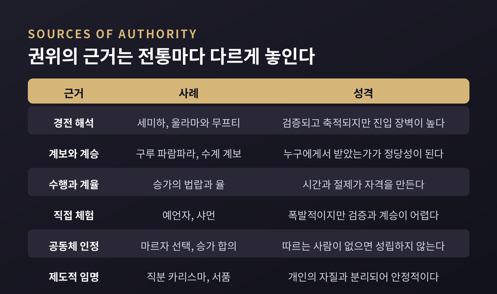
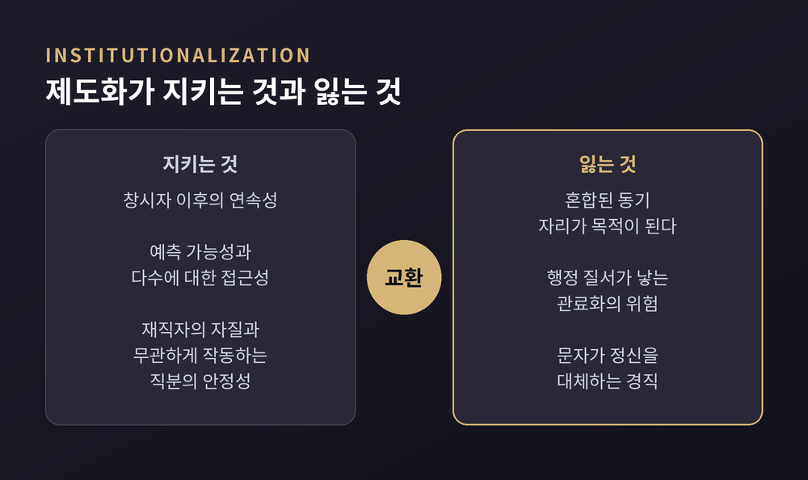

종교 지도자의 권위가 어디에 뿌리내려 왔는지에 관한 비교종교학 정리
이번 글에서는 종교적 권위가 어디에서 나오는지를 정리해 보겠습니다. 막스 베버의 지배 유형론을 실마리로 삼아, 사제와 예언자와 샤먼과 승가와 구루가 각각 무엇에 기대어 권위를 얻어 왔는지를 비교종교학과 종교사회학의 시선으로 살펴봅니다. 어느 종교의 권위 주장이 참인지를 가리는 글이 아니라, 권위가 만들어지고 이어지고 흔들리는 방식을 관찰하는 글입니다.
세 줄 요약
막스 베버는 정당한 지배를 세 가지 이념형으로 나눴습니다. 카리스마적 권위, 전통적 권위, 합법적·합리적 권위입니다. 이 틀이 실린 책이 『경제와 사회』이고, 스탠퍼드 철학백과는 이 책을 미망인의 편집으로 나온 사후 출판물이라고 밝히고 있습니다.
여기서 먼저 짚어야 할 것이 하나 있습니다. 베버가 말한 지배는 물리적 강제가 아니라는 점입니다. 그가 학문적으로 다룰 만하다고 본 지배는 "명령이 타당한 규범으로 받아들여지는 것"을 조건으로 삼습니다. 복종하는 쪽의 승인이 없으면 권위는 성립하지 않는 셈입니다.
세 유형은 각각 다른 곳에 뿌리를 둡니다. 카리스마적 권위는 지도자가 자신의 비범한 자질을 얼마나 설득력 있게 입증하는가에 달려 있습니다. 전통적 권위는 특정한 관습과 습속이 제도화되어 오랜 기간 안정적인 패턴을 재생산할 때 성립합니다. 합법적 권위는 시간과 장소에 얽매이지 않습니다. 정당성이 사람이 아니라 몰인격적 규칙에서 나오기 때문입니다.
한 가지 단서를 반드시 덧붙여야 합니다. 베버 자신이 이 셋을 분석 도구로 제시했을 뿐, 현실의 칸막이로 여기지 않았습니다. 실제 권위 구조는 대개 둘 이상의 정당성 원천을 동시에 끌어다 씁니다. 어떤 종교 지도자를 "카리스마형"이라고 한마디로 규정하는 일은, 정작 베버의 용법과는 거리가 있습니다.
카리스마적 권위에는 구조적인 약점이 있습니다. 지도자와 추종자 사이의 인격적 관계에 기대고 있어서, 그 지도자의 상실을 그대로 견뎌내지 못합니다. 한 사람과 하나의 가치군을 중심으로 조직된 활동은 취약하고 덧없습니다.
그래서 등장하는 개념이 '카리스마의 일상화'입니다. 불안정하고 인격적인 권위가 예측 가능하고 규칙에 지배되는 무언가로 전환되는 과정을 가리킵니다. 쉽게 말하면 권위를 사람에게서 떼어내 자리와 규칙에 옮겨 심는 일입니다.
베버는 승계의 방식을 여섯 가지로 정리했습니다. 정해진 표지에 따라 후계자를 찾는 탐색, 계시를 통한 확정, 창시자의 직접 지명, 자격을 갖춘 참모진의 지명, 혈족이 은사를 물려받는다고 보는 세습 카리스마, 그리고 권위가 자리 자체에 붙는 직분 카리스마입니다.
종교 영역에서 가장 중요한 일상화 형태로 지목되는 것이 마지막 항목입니다. 기능자가 서품되는 그 '직분'이 거룩한 것으로 간주되고, 그 거룩함이 다시 재직자의 개인적 도덕성과 무관하게 그의 행위에 부여된다는 구조입니다. 그 사람이 훌륭해서가 아니라, 그 자리가 그렇게 정해져 있어서 효력이 생긴다고 이해되어 온 셈입니다.

베버는 『종교사회학』에서 종교 전문가를 사제, 주술사, 예언자로 구분했고 신비가를 네 번째 범주로 덧붙였습니다.
주술사와 사제의 차이는 시간의 폭에 있습니다. 주술사의 기능은 그때그때의 개별적 필요와 긴장에 대응합니다. 사제의 기능은 체계화되고 안정화된 제의로 조직되어, 일반 대중에게 닥치는 그때그때의 사정으로부터 상당히 독립되어 있습니다. 힘을 다루는 방식도 다르다고 서술됩니다. 주술적 힘은 올바른 정형구를 통해 강제될 수 있는 반면, 종교적 행위자는 예배되거나 간청되어야 한다는 것입니다.
사제와 예언자의 차이는 방향에 있습니다. 사제가 기존의 신성한 전통에 봉사한다면, 예언자는 새로운 계시를 선포합니다. 예언자는 개인적 사명과 직접적 계시 주장에서 권위를 끌어오며, 질서를 유지하기보다 그것에 도전합니다. 베버는 예언자를 다시 둘로 나눴습니다. 어떻게 더 잘 살 수 있는지를 가르치는 윤리적 예언자와, 스스로 본보기가 되어 사람들이 자신을 본받게 하는 모범적 예언자입니다.
신비가는 또 다른 자리에 있습니다. 순수한 신비가의 카리스마는 결국 자기 자신에게 봉사하지만, 진정한 주술사의 카리스마는 타인에게 봉사한다는 대조가 자주 인용됩니다.
이 구분들 역시 깔끔하지 않습니다. 사제가 주술을 행하기도 하고, 예언자에게 기적 행위가 돌려지기도 합니다. 베버는 그 점을 몰랐던 것이 아니라, 알면서도 이념형을 택했습니다.
여러 전통을 나란히 놓고 보면, 권위의 근거가 서로 다르다는 점이 선명해집니다. 몇 갈래만 짚어보겠습니다.
텍스트 해석 권한. 히브리어 세미하는 문자 그대로 '기댐'을 뜻하며, 모세가 여호수아에게 손을 얹어 지위를 넘긴 장면을 서술한 구절에서 온 표현입니다. 이 용어는 '판결을 내릴 권한 부여'를 뜻하는 하타랏 호라아에서 발전해 왔습니다. 고전적 임직 절차는 탈무드 시대 말기, 대략 기원후 400년경까지 이어지다가 중단되었다고 정리됩니다.
학식과 합의. 울라마는 무슬림 제학문에 정통한 학자 집단으로, 신학자와 법률가와 재판관과 교수를 아우릅니다. 초기 이슬람에서는 이들의 합의, 곧 이즈마가 후대 공동체의 관행을 결정했다고 서술됩니다. 무프티는 새로운 상황에 대한 법적 견해인 파트와를 내놓는 학자입니다. 다만 그 자격을 두고는 견해가 갈립니다. 다수 학자는 독자적 법추론 자격자인 무즈타히드여야 한다고 보고, 일부는 법 전문가면 충분하다고 봅니다.
따르는 사람들의 선택. 12이맘 시아파의 마르자 알-타클리드는 문자 그대로 '모방의 원천'이며, 독자적 판단을 행사하기 어려운 이들의 지침이 됩니다. 흥미로운 대목은 신자가 따를 마르자를 스스로 고른다는 점입니다. 권위가 위에서 내려오기만 하는 것이 아니라 아래에서 올라오기도 하는 구조입니다.
계율과 연차. 초기 불교 승가는 비위계적이었고 결정은 합의로 이루어졌으며, 권위는 법랍과 도덕적 청정함과 법에 대한 이해에 근거했다고 전해집니다. 지금도 서열의 기준은 수계 이후의 연수이고, 이는 흔히 안거를 몇 번 마쳤는가로 셉니다. 수계식에는 최소 다섯 명의 승가가 필요하고, 그중 한 사람은 십 년 이상의 상좌여야 계사를 맡습니다.
계보. 구루와 제자의 연쇄인 파람파라는 시간을 가로질러 영적 힘을 흘려보내는 통로로 여겨져 왔습니다. 그래서 구루의 가르침은 계보에 의해 진정성이 인증됩니다. 무엇을 아는가보다 누구에게서 받았는가가 먼저 묻히는 셈입니다.
직접 체험. 샤머니즘은 트랜스나 탈아적 체험을 통해 능력을 얻는다고 여겨지는 인물을 중심에 둔 현상입니다. shaman이라는 말은 만주-퉁구스어 šaman에서 왔고 '아는 자'로 풀이됩니다. 엘리아데는 이를 '고대적 탈아 기법'으로 규정했습니다. 여기서는 임명장이 아니라 실제로 그 상태에 들어갈 수 있는가가 자격이 됩니다.

제도화는 공짜가 아닙니다. 토머스 오데아는 모든 종교 집단이 종교적 체험을 다수에게 지속적으로 이용 가능하게 만들고 안정적인 제도적 맥락을 제공해야 하는 문제에 부딪히며, 그 과정에서 다섯 가지 딜레마가 생긴다고 정리했습니다.
첫째는 혼합된 동기입니다. 제도가 만들어낸 역할과 지위를 원래의 사명이 아니라 자기 이익을 위해 추구하는 사람이 생깁니다. 둘째는 객관화와 소외로, 내면의 감정을 예배 형식으로 굳히는 데서 오는 갈등입니다. 셋째는 행정 질서가 낳는 관료화의 위험입니다. 넷째는 문자와 정신의 긴장입니다. 다섯째는 세속적 강제 수단에 기대고 싶어지는 유혹입니다.
정리하면 제도화가 지키는 것은 연속성과 예측 가능성입니다. 창시자가 없어도 다음 세대가 같은 것을 받을 수 있습니다. 잃는 것은 처음의 밀도입니다.
한 가지는 솔직히 밝혀두는 편이 낫겠습니다. 오데아의 개념 틀은 주로 그리스도교, 특히 가톨릭의 역사에서 도출되었습니다. 다른 전통에 그대로 옮겨 적용할 때는 조심할 필요가 있습니다.

1520년, 루터는 『독일 그리스도인 귀족에게 고함』에서 모든 신자가 대제사장 아래의 사제라고 주장했습니다. 그는 세속 신분과 영적 신분, 곧 평신도와 성직자를 나누는 전통적 구분을 비판했습니다.
배경을 알면 이 주장의 무게가 보입니다. 중세 교회는 오랫동안 은총이 주로 성사와 그것을 집전할 권한을 받은 이들을 통해 매개된다고 보았고, 사제는 고유하고 더 높은 신분에 자리했습니다. 만인사제직 주장은 그 위계를 지탱하던 다리를 걷어차는 격이었습니다. 결과적으로 하느님과 개인 사이의 중개자로서의 사제의 권위가 축소되었다고 평가됩니다.
이 교설이 신학적으로 옳은지는 이 글이 판단할 일이 아닙니다. 다만 권위의 원천이 직분에서 만인의 신앙으로 재배치된 사건이었다는 점만은 분명합니다. 덧붙이면, 이 교설을 어디까지 확장해 적용할 것인가를 두고는 신앙 내부에서도 지금까지 논의가 이어집니다.
신흥종교운동 연구는 카리스마의 일상화가 실제로 어떻게 굴러가는지를 현재형으로 보여줍니다. 아일린 바커는 런던정치경제대학 명예교수이자 종교운동 정보네트워크 INFORM의 설립자로, 1970년대 초부터 소수 종교와 그에 대한 사회적 반응을 연구해 왔습니다. 통일교 입교를 다룬 박사 연구를 계기로 관심이 150개가 넘는 집단으로 확장되었다고 정리됩니다.
그가 엮은 연구서는 새로운 종교 조직들이 외부와 내부의 압력 속에서 시간이 흐르며 어떻게 변하는가에 초점을 둡니다. 여기서 반복적으로 확인되는 것이 승계의 문제입니다. 구성원들이 영원히 살 것이라 믿었던 파나시아 소사이어티는 지도자 옥타비아의 사망 이후 사기가 꺾이는 위기를 겪었습니다. 통일교의 경우 2012년 문선명 사후 부인 한학자가 지도자 지위를 맡았으나 자녀들이 이의를 제기했고, 막내아들이 세운 생추어리 교회가 널리 알려진 분파로 언급됩니다.
일반화하자면 이렇습니다. 운동이 핵심 신념을 조정하거나 지도부 역학이 바뀔 때 분열은 빈번합니다. 승계는 행정 절차가 아니라, 권위의 근거를 다시 정하는 일이기 때문입니다.
예전에는 해석이 소수의 자리에 모여 있었습니다. 지금은 흩어져 있습니다.
하이디 캠벨은 디지털 종교 연구를 연 사람 중 하나로, 텍사스 A&M 대학교 커뮤니케이션학 교수이자 뉴미디어·종교·디지털문화 연구 네트워크의 디렉터입니다. 그는 '네트워크화된 종교'의 다섯 가지 특징으로 네트워크화된 공동체, 이야기화된 정체성, 이동하는 권위, 수렴하는 실천, 다중 현장 현실을 제시했습니다. 여기서 권위는 하나의 성직자 목소리에 집중되지 않고 대화의 노드들 사이에 분산됩니다.
실증 연구도 비슷한 방향을 가리킵니다. 이제 누구나 종교적 해석을 공개적으로 발화할 접근권을 갖게 되면서 기관의 통제력이 줄고 권위의 파편화가 나타난다는 관찰이 있습니다. 인스타그램의 종교 인플루언서를 다룬 연구가 2024년 학술지에 실렸고, 폴란드어권 가톨릭 틱토커를 분석한 연구는 여덟 가지 커뮤니케이션 전략을 확인했습니다.
다만 평가는 갈립니다. 한쪽은 이를 접근권의 확대로 읽습니다. 다른 쪽은 상품화로 읽습니다. 플랫폼의 알고리즘 논리에서는 인기와 시각적 매력과 업로드 빈도가 주된 요인이 되고, 그래서 디지털 설교자들이 볼 만하고 쉽게 퍼지는 콘텐츠를 만들도록 내몰린다는 지적입니다. 어느 쪽이 맞는지는 아직 정리되지 않았습니다.
숫자도 함께 보겠습니다. 미국 한정 데이터라는 점을 먼저 밝힙니다. 퓨리서치센터 자료에 따르면 2020년 4월에는 미국 성인의 63%가 종교 지도자를 상당히 또는 어느 정도 신뢰한다고 답했으나 이후 조사에서는 53%였습니다. 공익을 위해 행동할 것이라는 신뢰는 2018년 76%에서 67%로 내려왔습니다. 갤럽 조사에서는 성직자의 정직성과 윤리성을 높게 평가한 비율이 27%로 집계되었습니다. 문항과 척도가 달라 직접 비교는 어렵지만, 방향은 한쪽을 가리킵니다.
한편 같은 기관의 2023-24년 종교지형연구는 다른 결도 보여줍니다. 미국 성인의 62%가 스스로를 그리스도인으로 규정하며, 수십 년간 이어진 감소세는 2019년 이후 비교적 안정적이라는 것입니다.
끝으로 한 마디만 더 드리겠습니다.
이 글을 정리하며 남은 문장은 하나였습니다. "권위는 주장하는 쪽이 아니라 승인하는 쪽에서 완성된다." 계보든 경전이든 직분이든, 그 근거를 인정하는 사람들이 없으면 아무것도 작동하지 않습니다.
그렇다면 지금 종교적 권위는 사라지고 있는 것이냐고 물으신다면, 그렇게 보이지는 않는다고 답하겠습니다. 자리를 옮기고 있을 뿐입니다. 다만 어디로 옮겨 앉을지는, 옮겨 앉은 다음에야 알게 될 것입니다.